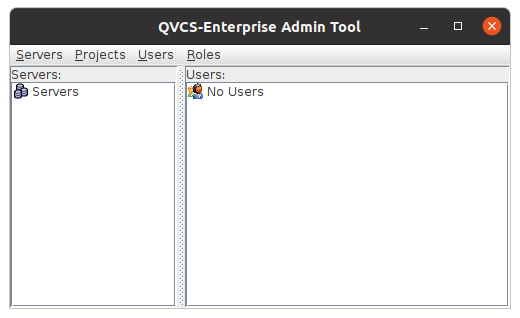
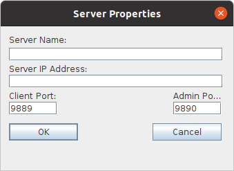
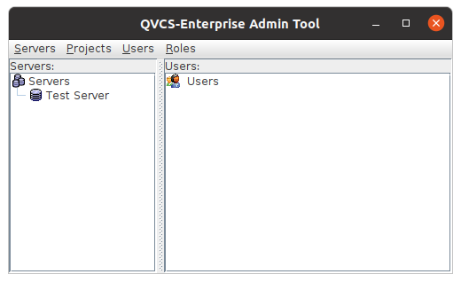

|
QVCS Enterprise -- Installation and Getting Started...Step 4: Start the admin application to define the server:For Windows users, execute the admin.bat batch file, either in a new command window or by double-clicking. For Linux or UNIX users, open a new shell window, and execute the admin.sh shell script (you may need to chmod +x to make it executable). The admin GUI application should start up. It will be a relatively small window that has just two panes. On the left is a "Servers" pane; on the right is a "Users" pane.  Select the "Servers" node on the left pane, right click to bring up the context menu, and select the Add server definition menu item. On the resulting Server Properties dialog box, you'll need to define several fields.  Server Name: For this field, enter some name for the server that you find meaningful. Server IP Address: For this field, enter the IP address for the server. This should be the IP address or DNS name that can be used to 'see' the machine where the server is running. Client Port: For this field, enter 9889 IDE Port: For this field, enter 9887 Admin Port: For this field, enter 9890 Click OK. You should see the server show up in the list of Servers in the left server pane:  |
| © Copyright 2004-2010 Quma Software, Inc. All Rights Reserved. |